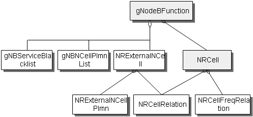
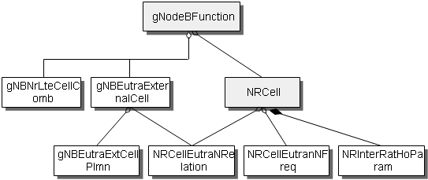

This section describes the functions and concepts of neighboring
cells and neighbor relationships. It also provides the managed object
model (MOM) view and describes the managed objects (MOs).
Functions and Concepts
NCL
A neighboring cell list (NCL) of a cell contains information about
the cells under other base stations (referred to as external cells).
In the current version, each cell has only one intra-RAT NCL, including
5G RAN external cells. There are inter-RAT NCLs. Currently, only external
E-UTRAN cells are supported.
NRT
A neighboring
relation table (NRT) of a cell contains information about the neighbor
relationships of the cell with external cells. In the current version,
each cell has only one intra-RAT NRT, including 5G RAN intra-frequency
neighbor relationships and 5G RAN inter-frequency neighbor relationships.
MOM View
Figure 1 shows
the MOM for 5G RAN neighboring cells and neighbor relationships, which
is a subset of the gNodeBFunction MOM.
Figure 1 MOM for 5G RAN Neighboring Cells and Neighbor Relationships

The MOs related
to 5G RAN neighboring cells and neighbor relationships are defined
as follows:
- NRExternalNCell:
An NRExternalNCell MO defines the basic information about an external
5G RAN intra-RAT cell, including the gNodeB ID, mobile country code,
mobile network code, cell ID, frequency information, physical cell
ID, and tracking area code. This MO is used to create intra-frequency
or inter-frequency NR neighbor relationships for one or more NR cells
of the local base station.
- NRCellRelation: An
NRCellRelation MO defines the neighbor relationship for an NR cell,
including the neighboring cell information (gNodeB ID, mobile country
code, mobile network code, and cell ID), neighboring cell measurement
parameters (such as cell individual offset). Neighbor
relationships are used for handovers and cell reselections.
- NRExternalNCellPlmn: An NRExternalNCellPlmn MO defines the PLMN list of the NR external
neighboring cells.
- gNBNCellPlmnList: A GnbNCellPlmnList MO defines gNodeB neighboring cell PLMN list.
- NRCellFreqRelation: An NRCellFreqRelation MO consists of parameters related to non-serving frequencies, which are used for inter-frequency handovers and cell reselection.
- gNBServiceBlacklist: A gNBServiceBlacklist MO is used to record whether cells in a tracking area support specific services. It serves as a criterion for continuity of specific services. Parameters in this MO need to be set only when cells in a tracking area do not support specific services. If parameters in this MO are not set for an external neighboring cell, all services are supported by default in the external neighboring cell.
Figure 2 shows the MOM for 5G RAN neighboring
cells and neighbor relationships with E-UTRAN, which is a subset of
the gNodeBFunction MOM.
Figure 2 MOM for 5G RAN neighboring cells and neighbor relationships
with E-UTRAN

The MOs related
to 5G RAN neighboring cells and neighbor relationships are defined
as follows:
- gNBEutraExternalCell: A gNBEutraExternalCell MO defines an external E-UTRAN cell. The
NCL of the neighboring E-UTRAN cells of the local gNodeB is the common
parameter. It is used to create neighbor E-UTRAN relationships for
one or more serving cells of the local gNodeB. In RAN sharing scenarios,
the PLMN of the external E-UTRAN cell needs to be added.
- gNBEutraExtCellPlmn: A gNBEutraExtCellPlmn MO defines the PLMN list of an external E-UTRAN
cell for a gNodeB.
- NRCellEutraNRelation: An NRCellEutraNRelation MO defines the parameters of an inter-RAT
neighboring E-UTRAN cell and is used for handovers.
- NRCellEutranNFreq: An NRCellEutranNFreq MO defines neighboring E-UTRAN frequencies.
Common parameters such as reselection priority and measurement bandwidth
are configured for neighboring E-UTRAN frequencies. These parameters
are used for measurement control and inter-frequency reselection of
SIB5.
- NRInterRatHoParam: An NRInterRatHoParam MO defines parameters related to inter-RAT
handovers.
- gNBNrLteCellComb: A gNBNrLteCellComb MO is used to configure an NR and LTE cell combination in NSA networking.